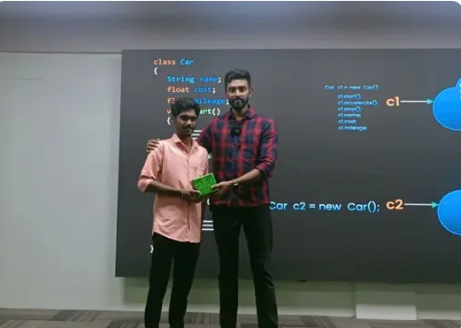
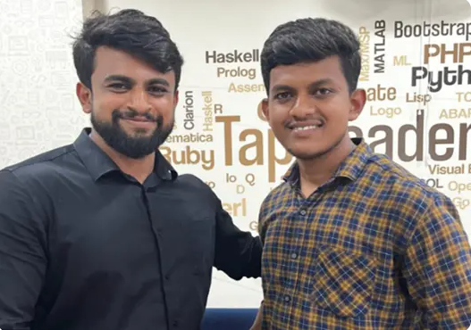

Our complete online training has made students learn to code anytime anywhere
& got placed in various Companies. Here are our few students placed at various
companies

Gowtham GM
A warm thanks to the Tap Academy team.
I am Gowtham GM from Tamilnadu, a 2024 passed-out student. I joined Tap Academy as a CSR student
in the month of February.My journey with Tap Academy is quite different. The trainers at Tap Academy
are skilled and experienced. They teach a lot of new concepts and help in learning programming languages
from scratch.I am from the Computer Science branch, but the teaching at Tap Academy is structured in a way
that makes it easy for students from all domains to understand the concepts and technology taught by the
trainers.
Finally, I got placed as a Software Engineer at Revature with a package of 3.25 LPA. The placement team helped me a lot in securing this job.
Thank you to the entire Tap Academy team for helping me acquire this opportunity.

|
Gagan GR After joining Tap Academy, I have improved my programming skills, and my knowledge of core Java has also improved. Now, I am learning the Collection Framework, MySQL, HTML, and CSS in parallel.Through the TAI platform, I have enhanced my problem-solving skills. Additionally, the LMS makes it easy to watch all the recorded videos. They also provide recorded videos of frameworks like J2EE, Spring, Data Structures, etc. I got placed in Promantia Business Solutions for the role of Associate Technical Consultant with a package of 3 LPA. Thank you TAP ACADEMY for giving me this opportunity. |